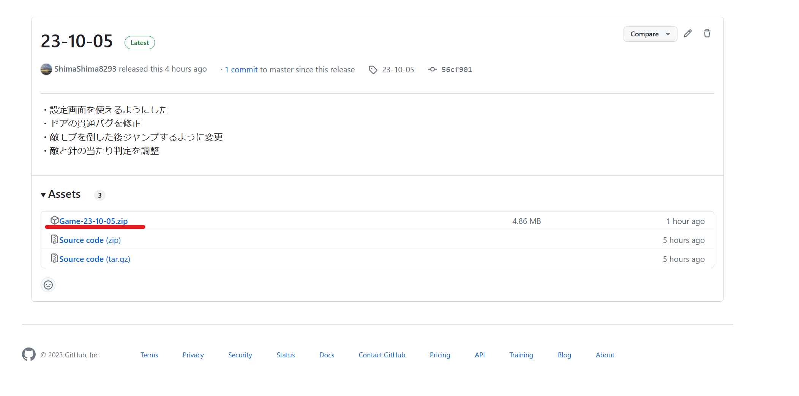
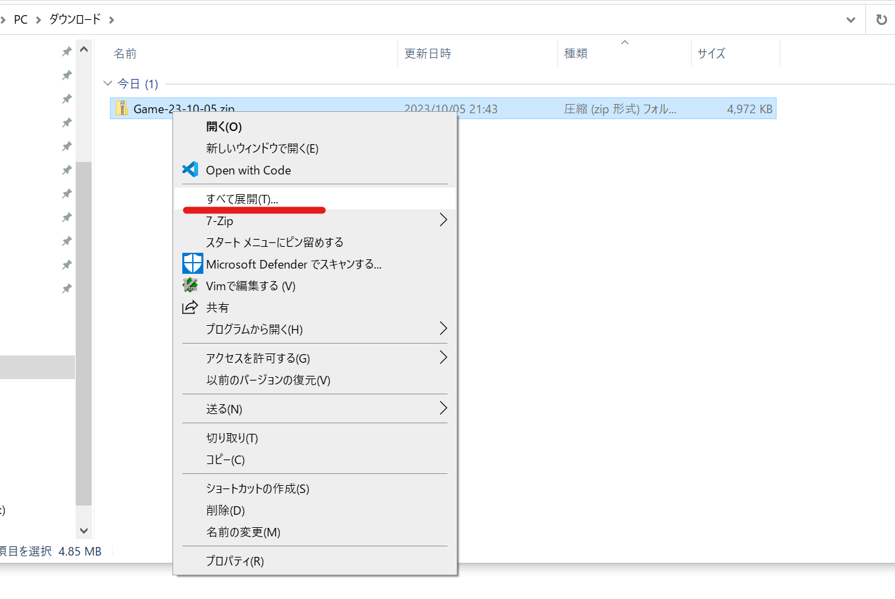
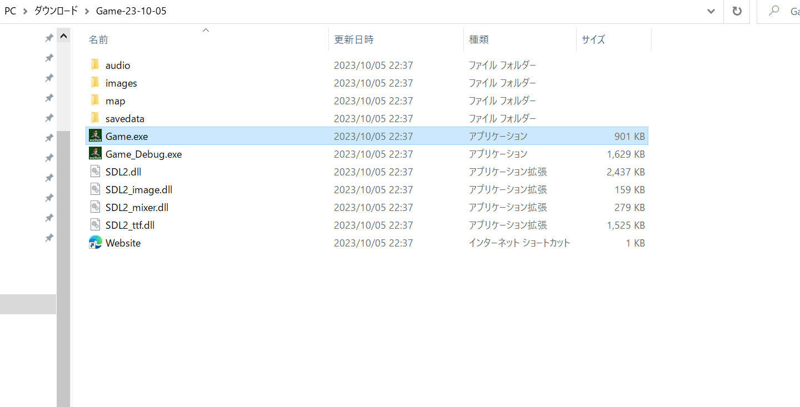
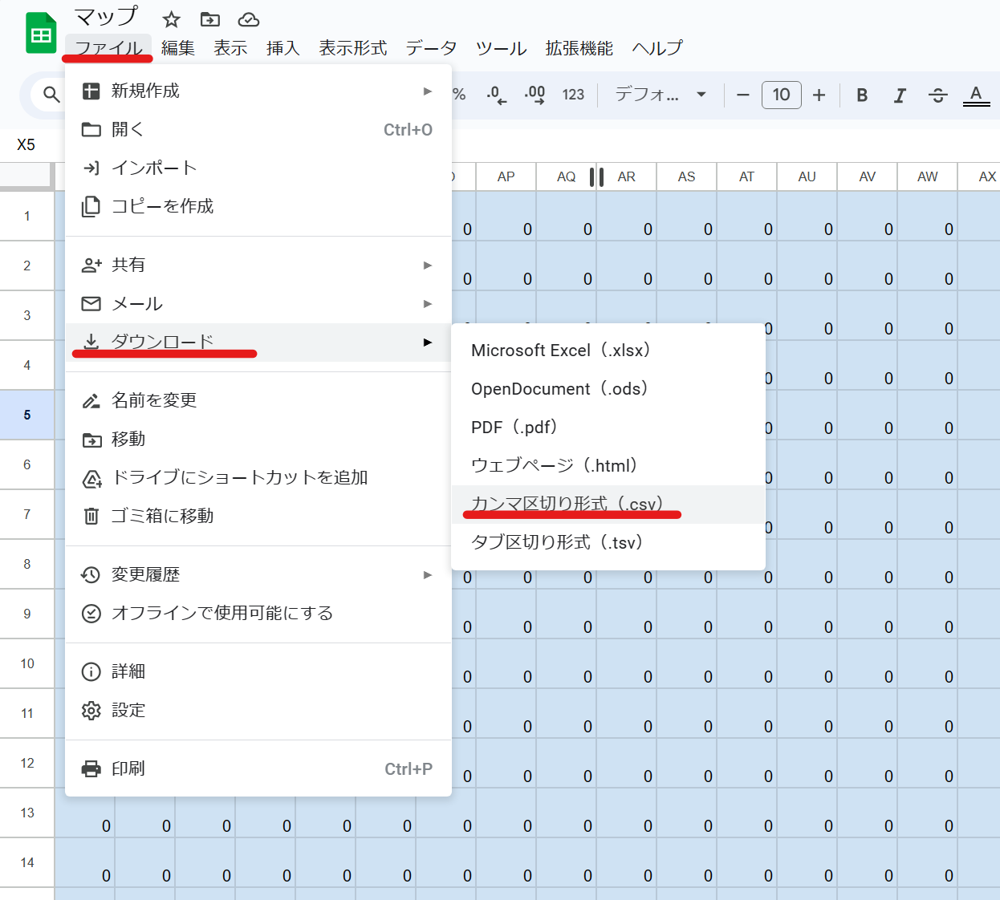
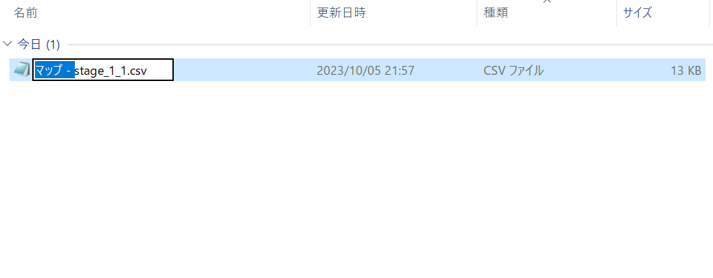
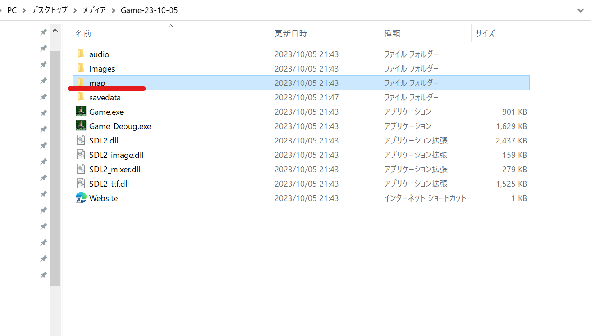

トップ
目次
ゲームのダウンロード方法
1. ダウンロード
ここのページの「Game_○○-○○-○○.zip」の様なリンクをクリック。
2. 解凍（展開）
ダウンロードしたファイルを右クリック→すべて展開をクリック。そのあとに何かウィンドウが表示されるので「展開」をクリック。
3. 起動
展開したフォルダの中の「Game.exe」というファイルをダブルクリックで起動。不具合があるときはゲームを起動できないときの対処法の項目を読んでください。
操作方法
ゲームパッドのボタンは設定画面で変更可能。
| 動作 | キー | ゲームパッド（デフォルト、機種差あり） |
|---|---|---|
| メニュー操作/移動 | 矢印キー | 左ジョイコン |
| 決定/アイテム使用 | Space | A |
| ジャンプ | 上矢印キー | X |
| 仕掛けを使用 | エンターキー | Y |
| 戻る | Escape | B |
| 終了/一時停止 | Escape | Start |
| デバッグ情報を表示 | F3 | 無し |
| 現在のシーンを再ロード | F4 | 無し |
| ウィンドウモード切り替え | F11/Shift+F11 | 無し |
| 強制終了 | Alt + F4 | 無し |
ゲームパッドの使い方
ゲームが起動された時に最初に検知されたゲームパッドしか使えない。なのでゲームパッドはゲーム起動前に繋いでおかなければいけない。
もしゲームパッドが使えないときはGame_Debug.exeを開いてみて黒い画面の一番上の方に下の文が出ていたらゲームパッドを検知できなかったという事がわかる。

Google Sheetsからのマップの読み込み方法
Google Sheets（ここ）で打ち込んだマップをゲーム内で読み込む方法。かなり面倒くさいけどマップをゲームで試しながら調整できる。
1. ダウンロード
左上のファイル→ダウンロード→カンマ区切り形式（.csv）を選択
2. 名前変更
ファイル名から「マップ - 」の部分を消して「stage_○○_○○.csv」の様な名前にする
3. 移動
名前変更したファイルをゲームフォルダの中のmapフォルダに移動。ほとんどの場合「宛先には既に"stage_○○_○○.csv"という名前のファイルが存在します」のような警告が出るので「ファイルを置き換える」を選択。これでゲームを開いたら読み込めるはず
ゲームを起動できないときの対処法
「SDL2.dllが見つからない」などのエラーが出る
ゲームの必要なファイルが一緒にダウンロードできていないので、ゲームのフォルダごとダウンロードしなおすと直る。
画面が真っ暗で文字しか表示されない
画像フォルダが見つからないか、ゲームの開き方が良くないときに起こる。前者の場合はゲームのフォルダごとダウンロードし直して、後者の場合はGame.exeをファイルエクスプローラーからもう一度起動すると直るかも。
警告が出る
初めてゲームを起動しようとすると「Windows によって PC が保護されました」といった警告が高確率で出る。この場合は詳細情報→実行を押すと起動できる。二度目以降は警告は出ないはず。